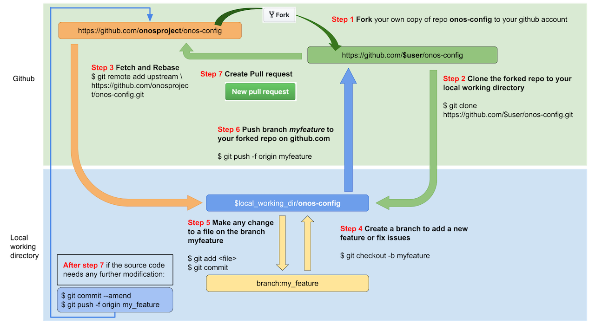

Contributing to onos-config
The ONOS team hopes for and welcomes contributions from the community at large.
To become a contributor, you will first need to sign a CLA. After that, simply follow the process outlined below for submitting your patches on GitHub.
Workflow
Contributions are accepted via GitHub Pull Requests submitted from the developer's own Fork of the onos-config repository. The following diagram illustrates the steps required to establish such a Fork and to create a Pull Request.

1. Fork on GitHub
- Visit https://github.com/onosproject/onos-config
- Click
Forkbutton (top right) to establish your own GitHub repository fork.
2. Clone Fork
The onos-config code should be placed under your GOPATH (per Go workspace conventions)
using the following procedure:
If you have not set and exported the GOPATH environment variable, please do so:
export GOPATH=$(go env GOPATH)
Similarly, set and export the GIT_USER environment variable to match your github profile name:
export GIT_USER={your github profile name}
Then, clone your fork of the onos-config repository:
ONOS_ROOT=$GOPATH/src/github.com/onosproject
mkdir -p $ONOS_ROOT && cd $ONOS_ROOT
git clone https://github.com/$GIT_USER/onos-config.git
# or: git clone git@github.com:$GIT_USER/onos-config.git
cd $ONOS_ROOT/onos-config
git remote add upstream https://github.com/onosproject/onos-config.git
# or: git remote add upstream git@github.com:onosproject/onos-config.git
# Never push to upstream master
git remote set-url --push upstream no_push
# Confirm that your remotes make sense:
git remote -v
3. Branch
Get your local master up to date:
cd $GOPATH/src/github.com/onosproject/onos-config
git fetch upstream
git checkout master
git rebase upstream/master
Branch from it:
git checkout -b myfeature
Then edit code on the myfeature branch.
4. Keep Branch in Sync
While on your myfeature branch
git fetch upstream
git rebase upstream/master
Please don't use git pull instead of the above fetch / rebase. git pull
does a merge, which leaves merge commits. These make the commit history messy
and violate the principle that commits ought to be individually understandable
and useful (see below). You can also consider changing your .git/config file via
git config branch.autoSetupRebase always to change the behavior of git pull.
5. Commit
Commit your changes.
git commit
If you make other changes pleas add them to a new commit and thus keep
the history of your work.
Your branch, after you open a pull request,
will be merged with a squash and commit strategy, thus showing as only one commit.
6. Push
When ready to review (or just to establish an offsite backup or your work),
push your branch to your fork on github.com:
git push origin myfeature
7. Create a Pull Request
- Visit your fork at
https://github.com/$user/onos-config - Click the
Compare & Pull Requestbutton next to yourmyfeaturebranch.
Please follow the pull request guidelines .
If you have upstream write access, please refrain from using the GitHub UI for creating PRs, because GitHub will create the PR branch inside the main repository rather than inside your fork.
Get a Code Review
Once your pull request has been opened it will be assigned to one or more reviewers. Those reviewers will do a thorough code review, looking for correctness, bugs, opportunities for improvement, documentation and comments, and style.
Commit changes made in response to review comments to the same branch on your fork.
Very small PRs are easy to review. Very large PRs are very difficult to review.
Squash and Merge
Upon merge (by either you or your reviewer), all commits left on the review branch should represent meaningful milestones or units of work. Use commits to add clarity to the development and review process.
Before merging a PR, squash any fix review feedback, typo, merged, and rebased sorts of commits.
It is not imperative that every commit in a PR compile and pass tests independently, but it is worth striving for.
In particular, if you happened to have used git merge and have merge
commits, please squash those away: they do not meet the above test.
A nifty way to manage the commits in your PR is to do an interactive rebase, which will let you tell git what to do with every commit:
git fetch upstream
git rebase -i upstream/master
For mass automated fixups (e.g. automated doc formatting), use one or more commits for the changes to tooling and a final commit to apply the fixup en masse. This makes reviews easier.
How to Revert a Commit
In case you wish to revert a commit, use the following instructions.
If you have upstream write access, please refrain from using the
Revert button in the GitHub UI for creating the PR, because GitHub
will create the PR branch inside the main repository rather than inside your fork.
1. Create a branch and sync it with upstream.
# create a branch
git checkout -b myrevert
# sync the branch with upstream
git fetch upstream
git rebase upstream/master
2. Revert the prior commit(s)
If the commit you wish to revert it a merge commit, run this:
# SHA is the hash of the merge commit you wish to revert
git revert -m 1 SHA
If it is a single commit, then run the following:
# SHA is the hash of the single commit you wish to revert
git revert SHA
The above will create a new commit reverting the changes.
3. Push this new commit to your remote.
git push ${your_remote_name} myrevert
4. Create a pull request using this branch.
Community Guidelines
This project follows Google's Open Source Community Guidelines.